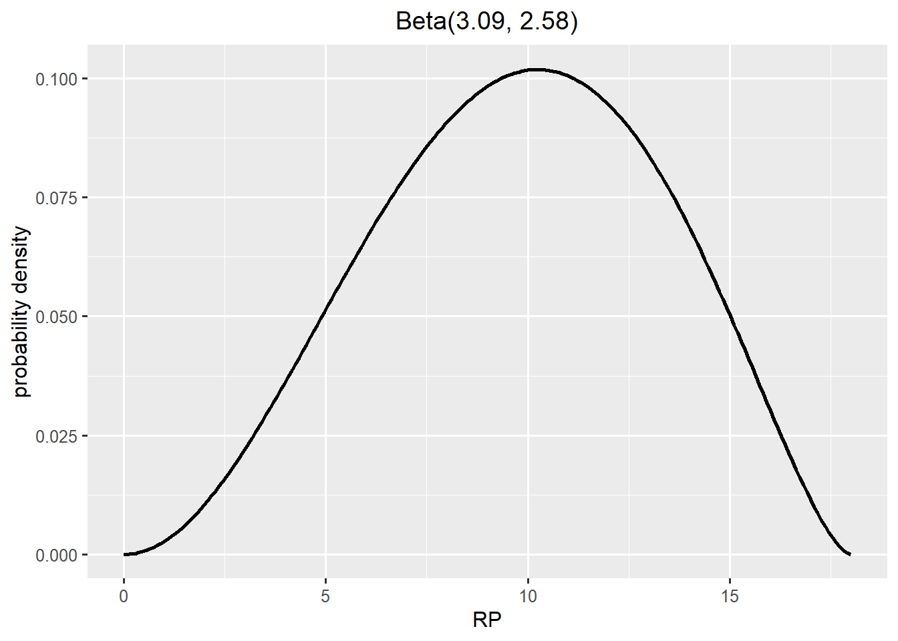
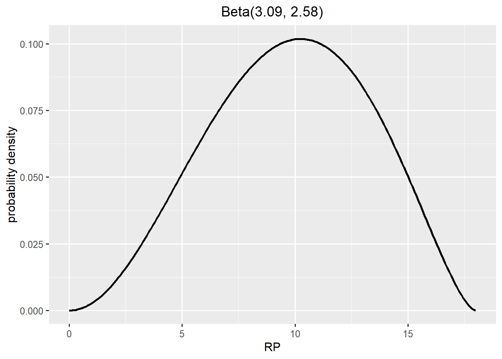
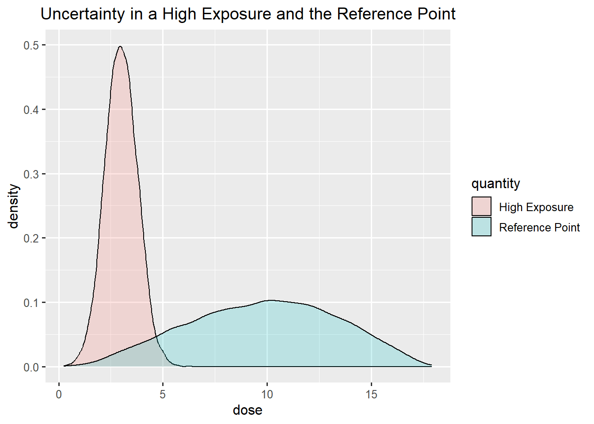
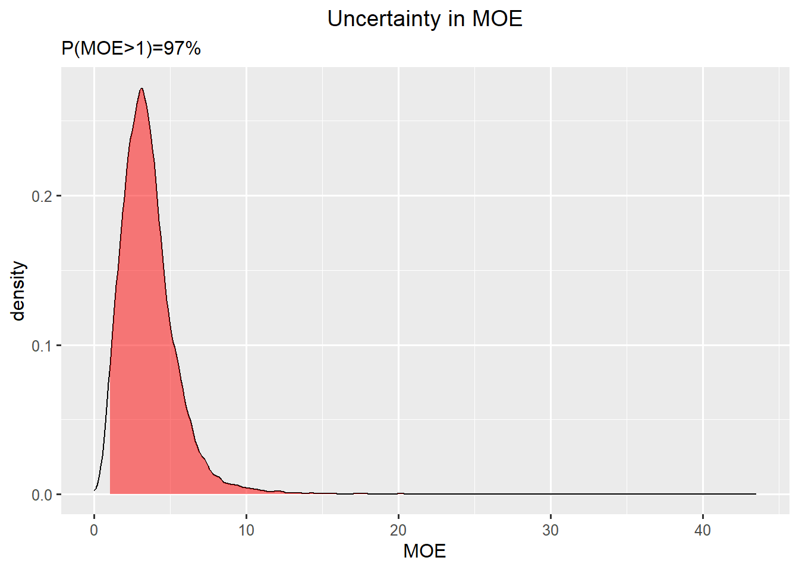
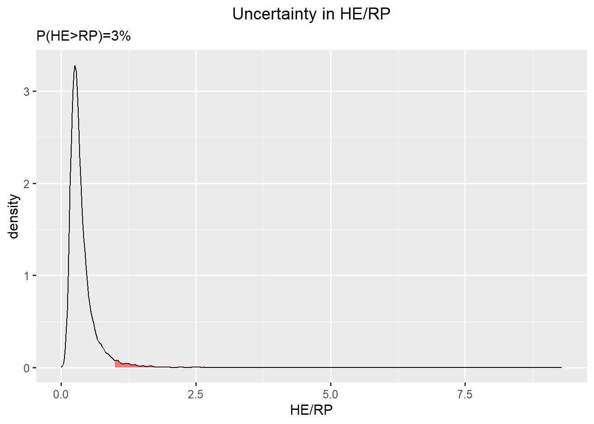

fit <- SHELF::fitdist(vals = c(bmdl,bmd,bmdu),probs = c(0.05, 0.5, 0.95), lower = 0, upper= bmdu*1.2)
SHELF::plotfit(fit,d="beta",xlab="RP",ylab="probability density")
Work in progress RiskHunt3r
The purpose of an uncertainty analysis is to identify sources of uncertainty and evaluate their combined impact on the experts uncertainty in the outcome of interest.
This page describe an approach to quantify uncertainty when risk is assessed by combining contious quantities on hazard and exposure.
A tiered uncertainty analysis can be
an expert judgement on the outcome of interest directly
a probability bound analysis, where uncertainty associated with the hazard and exposure as assessed separately as probability bounds, which are then combined by probability bound analysis. The results feed into expert judgement on the outcome of interest taking into account additional sources of uncertainty than those considered in the hazard and exposure part.
a full probabilistic analysis, where uncertainty associated with the hazard and exposure as assessed separately as probability distributions, which are then combined by Monte Carlo simulation. The results feed into expert judgement on the outcome of interest taking into account additional sources of uncertainty than those considered in the hazard and exposure part.
Consider a human health risk assessment of chemical X.
The quantity of interest for the hazard assessment is the Reference Point, RP.
As an example, a RP of 3 μg X/kg bw per day was identified by the experts as the BMDL from a model average of BMD modelling for a relevant human effect.
Model Averaged BMD model
| BMDL | BMD | BMDU |
|---|---|---|
| 3 | 10 | 15 |
The quantity of interest for the exposure assessment is a High Exposure, HE.
The range (seen over different populations and data sets) of the exposure estimates for X was assessed as
1 - 2 μg/kg bw per day for an average exposure scenario and
2 - 4 μg/kg bw per day for a high-level exposure scenario.
The outcome of interest is the event that the High Exposure is exceeding the Reference Point, i.e.
\[HE > RP\] Another way of formulating this is as a Margin of Exposure MOE defined as \[MOE=\frac{RP}{HE}\]
In the risk assessment on X the derived MOEs range between
3 - 1.5 for the average exposure scenario and
1.5 - 0.8 for high level exposure scenario, respectively.
A MOE of 1 describes the exposure level that could be associated with a 5% increase relative to the background incidence for skin cancer.
Note that the value 5% comes from the BMD modelling).
A MOE greater than 1, implies that a High Exposure is not exceeding the Reference Point, and thereby a low risk.
Risk managers set what is an acceptable MOE. It can e.g. be 1, 10 or 1000.
These levels can be seen to represent uncertainty factors for specific sources of uncertainty. If so, these sources of uncertainty should not be taken into account when experts make their judgement of uncertainty in the MOE. The challenge might be smaller (but not absent) by considering these uncertainty factors in the assessment (e.g. RP/UF instead of RP).
A high acceptable MOE would correspond to a high level for practical certainty
The purpose of the assessment is to conclude if the MOE is above the threshold for the acceptable MOE. Here this threshold was set to 1.
The outcome of interest is then
\[MOE > 1\]
which can be either true or false.
The aim is to express the expert’s uncertainty in the outcome of interest as a % probability, i.e. \(P(MOE > 1)\).
The risk managers has informed the risk assessors that they find a certainty of 90% or more as acceptable for decision making. This is know as practical certainty. It can be sufficient to conclude if overall uncertainty is in the range of practical certainty.
| Health concern | Inconclusive | No health concern |
|---|---|---|
| <10% | 10 - 90 | >90% |
If not, the assessment should be reported as inconclusive. The risk managers can then decide to support generation of new studies to fill data gaps and perform a re-evaluation of the risk assessment.
A probability threshold for a “firm conclusion” opens up to communicate conclusion as a health concern or no health concern, or inconclusive.
Sources of uncertainty have been identified related to inputs and methods in the parts of the assessment, i.e. related to:
Sources of uncertainty can be summarised as tables with explanations and indications on their influence on the overall uncertainty (qualitative expressions).
There are several options to evaluate the combined impact of all these sources of uncertainty on the conclusion whether the MOE is greater than 1.
A tiered uncertainty analysis is done in several steps
Formulate the conclusion as % certainty for the more probable outcome.
Check if the % certainty for the more probable outcome is in the region of practical certainty (i.e. <10% or >90%).
The basic option for uncertainty analysis is to assess the combined impact in a single step using expert judgement. This is done by asking the experts to agree how certain they are as a group that the MOE is greater than 1, given that all identified (non-standard or standard) sources of uncertainty has been resolved.
This can be done by reaching a consensus judgement, following procedures for expert knowledge elicitation (using behavioural aggregation to allow for discussions). This judgement requires expertise on both toxicity and exposure assessment.
This is a useful option when the Highest Exposure is far below the Reference Point.
A refined approach is needed when there is a small difference between the Reference Point and the Highest Exposure.
A refined option is to assess uncertainties separately before combining them by calculations and assessing overall uncertainty.
First we explore how to do this with probability bound analysis.
The refined option with probability bounds can be modified to consider practical certainty. In this example, the risk managers and the experts have agreed that experts must be at least 90% certain that a High Exposure \(HE\) is below the Reference Point \(RP\) in order for risk managers to make a decision.
This means that the assessment is conclusive when the experts are at least 90% certain that there is a health concern or that they are at least 90% certain that there is not a health concern.
Subtract the probability threshold for practical certainty from 100% to set an upper bound for the the sum of the lost probabilities.
\[100\% - 90\% = 10\%\]
Divide the resulting probability into two parts, one for hazard and one for exposure, here \(5\%\) and \(100-90 - 5 = 5\%\).
Subtract the lost probability for hazard from 100, to set the probability required for a conservative estimate of the Reference Point.
\[100\% - 5\% = 95\%\]
Elicit a conservative estimate of the Reference Point (or RP/UF) from the toxicology experts (asking them to consider the identified sources of uncertainty for the hazard assessment). Define the conservative estimate as the quantile \(y\)
\[P(RP < y) = 95\%\]
Subtract the lost probability for exposure from 100, to set the probability required for a conservative estimate of a High Exposure.
\[100\% - 5\% = 95\%\]
Elicit a conservative estimate of a High Exposure from the exposure experts (asking them to consider the identified sources of uncertainty for the exposure assessment). Define the conservative estimate as the quantile \(x\)
\[P(HE < x) = 95\%\]
Divide the conservative estimate for the exposure with the conservative estimate for the hazard \(\frac{x}{y}\).
If the ratio is less than the threshold on MOE, then there is sufficient certainty for a firm conclusion that exposure is below the hazardous concentration. I.e. is \(\frac{x}{y} < 1\)?
Use a conservative estimate for RP as starting point and use experts judgement on their uncertainty for that to guide what value to consider for the exposure part.
Ask experts to judge their probability expressing their uncertainty about a conservative estimate of hazard, e.g. the BMDL,
\[y = 3\]
The experts judge that they are 95% certain that the Reference Point is above 3 μg X/kg bw per day.
\[P(RP > y) = 95\%\]
| P below | value | P above |
|---|---|---|
| 5% | y | 95% |
In some situations, the RP is the BMDL and then it is difficult to talk about uncertainty about the RP. If so, one can introduce an uncertainty factor (UF) that considers uncertainty associated with the hazard assessment. The focus is then on RP/UF instead of RP.
\[P(RP > y) = 95\%\]
Find a value on a High Exposure where the MOE is at the critical threshold set by risk managers
\[\frac{x}{y} = 1\]
\[x = 1 \cdot y = 3\]
Ask the experts to judge their probability that a High Exposure is below 3 μg X/kg bw per day.
\[P( HE < x) = 95\%\]
| P below | value | P above |
|---|---|---|
| 95% | x | 5% |
Check if practical certainty has been obtained, i.e. if \(100 - [(100-P(HE < x)) + (100-P(RP > y))] \geq 90\%\)
\[100-[5+5]=100-10=90\]
If it is not possible to conclude with high enough certainty, we move on to a refined option for uncertainty analysis with probability distributions or consider collecting more data.
A refined option can alternatively be done with with probability distributions which are combined by Monte Carlo simulation.
This is an option, when the outcome of a probability bound analysis was not conclusive.
It can also be an option when the assessors prefers to choose to justify probability distributions for uncertainty from available information, combine uncertainties by performing the probability calculations, and then ask the experts to make a judgement on the outcome of interest directly. Note that an explicit elicitation of the outcome of interest following the Monte Carlo simulation is a condition for this approach to result in a characterisation of the experts uncertainty considering the combined impact of all sources of uncertainty in the assessment.
A probability distribution representing uncertainty in the Reference Point can be taken from the BMD uncertainty distribution generated by bootstrapping or Bayesian modelling.
We let the BMDL, the BMD, and the BMDU define the 5th percentile (P05), the median (P50), and the 95th percentile (P95) of the probability distribution for uncertainty in the RP.
| BMDL | BMD | BMDU |
|---|---|---|
| P05 | P50 | P95 |
| 3 | 10 | 15 |
The lower bound is zero. Since the distribution is skewed to the right we set an upper plausible bound. Here we fit a beta distribution using the SHELF R-package.
fit <- SHELF::fitdist(vals = c(bmdl,bmd,bmdu),probs = c(0.05, 0.5, 0.95), lower = 0, upper= bmdu*1.2)
SHELF::plotfit(fit,d="beta",xlab="RP",ylab="probability density")
An alternative is to go to the online elicitation app for one distribution link to SHELF app and find a probability distribution that matches these quantiles. Note that you have to specify the lower and upper bound of the plausible range. You can get them from studying the sample from BMD modelling. You can find the R-code to generate random numbers from the selected probability distribution in the report that is possible to download from SHELF
The beta-distribution is defined as
\[\frac{RP}{18} \sim beta(3.09, 2.58)\]
We sample from it using this function
This approach ignores additional sources of uncertainty than those considered in the model, hence we need to draft how to consider those as well. e.g. by adjusting the specification of the quantiles.
A probability distribution representing uncertainty in the estimates of High Exposure over different surveys can be specified by assuming that the range of the dietary exposure estimates corresponds to the bounds of an 80% probability interval.
| min HE | max HE |
|---|---|
| P10 | P90 |
| 2 | 4 |
One choice could be to use a normal distribution to represent uncertainty in a High Exposure. A normal distribution has two parameters, the mean (\(\mu\)) and the standard deviation (\(\sigma\)).
\[HE \sim N(\mu,\sigma)\]
The normal distributions is not an ideal choice for a non-negative variable. There is no default distribution and it is important that it represents experts uncertainty about a high exposure.
The choice of probability distribution could be guided by more detailed information, paired averages and P95s from different populations groups.
We derive the mean by taking the mid value in the range
\[ \mu = \frac{4+2}{2}= 3\] The standard deviation is specified by considering the formula for a 90% quantile in the normal distributions as a function of the parameters.
\[ P90 = \mu + 1.28\cdot \sigma\]
and rearranging it to be a function of \(\sigma\)
\[ \sigma = \frac{P90 - \mu}{1.28} = \frac{4-1}{1.28}=0.78\]
Specification of the parameters and draw of random numbers from the normal distribution.
Evaluate the combined impact of the characterised uncertainty in RP and HE on the MOE by Monte Carlo simulation.
The distributions for High Exposure and the Reference Point overlap.

The calculated probability that the MOE is above 1 is 97 %.
This value was derived by calculating the proportion of random samples in your Monte Carlo simulation that corresponds to a MOE > 1.
One way to visualise the resulting distribution for uncertainty in MOE is

where the red area corresponds to a MOE greater than 1.
Alternative way to summarise when not using MOE
If risk is evaluated based on the outcome that the High Exposure is exceeding the Reference Point, then the probability to be calculated is
\[P(\frac{HE}{RP}>1)\]

In this visualisation, the red area corresponds to a High Exposure greater than the Reference Point.
As a final step, the experts are invited to adjust this probability upwards or downwards considering additional sources of uncertainty, not previously taken into account in the analysis.
For the purpose of this exercise we assume that the experts subsequently judged that any additional sources of uncertainty were small enough that there was no need to adjust the calculated % probability that the MOE is above 1.
An additional sources of uncertainty could e.g. be the choice of distributions used in the Monte Carlo simulation and any limitations in the quality of the exposure and toxicity data that are not taken into account in those distributions.
The % certainty for the more probable outcome is 97%. Check if it is in the region of practical certainty (i.e. <10% or >90%).